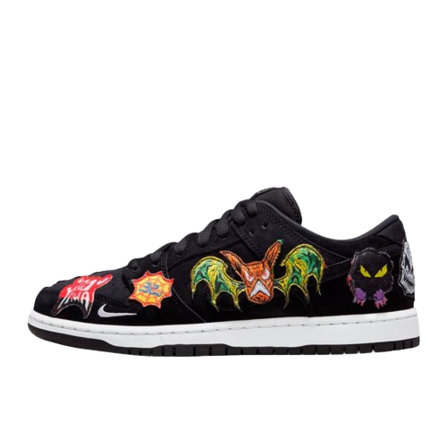
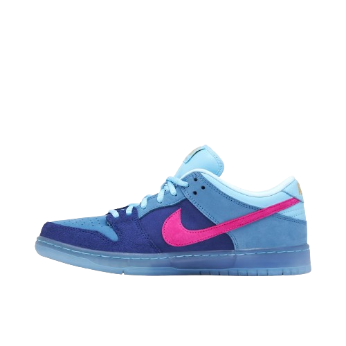

NIKE
Why So Sad?O Why So Sad? x Nike SB Dunk Low apresenta uma base de couro azul claro e línguas de malha com sobreposições rasgadas em azul escuro para revelar o amarelo por baixo. Um logotipo de galinha com skate bordado no calcanhar lateral, “Why So Sad?” marca na etiqueta interna da língua e pontos de interrogação bordados nos calcanhares. Uma entressola branca no topo de uma sola translúcida completa o design.
100/10034
37
40
42
45
46

